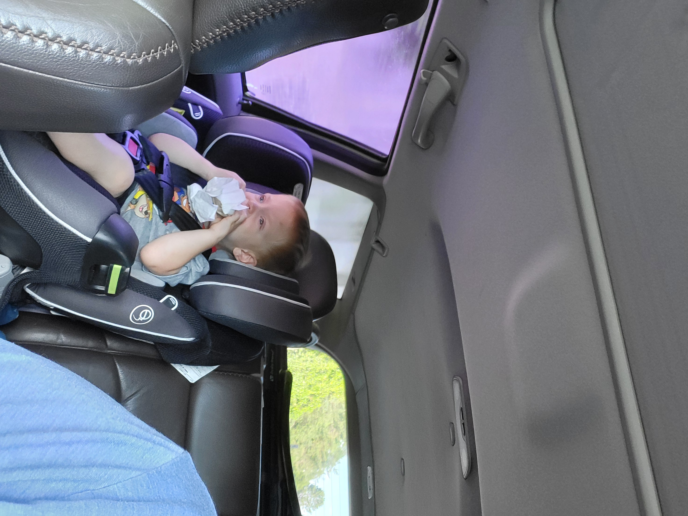
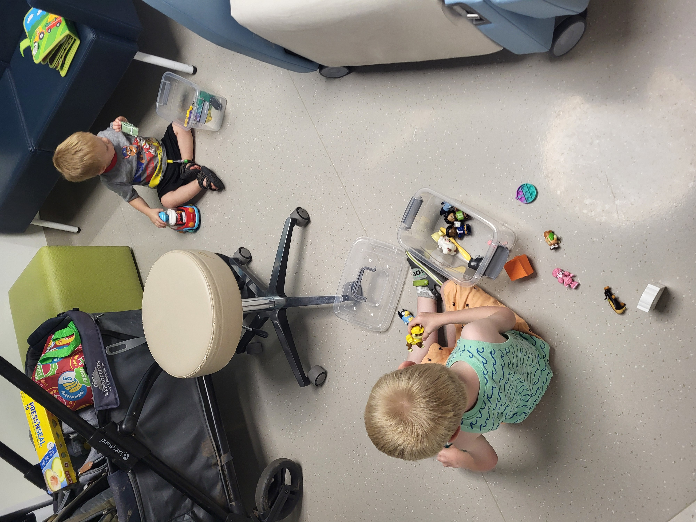

God is Over All
June 24, 2026
Four days overdue, and still no baby. We've had a lot of uncertainty and a large dose of hurry-up-and-wait since our last update. We've enjoyed the time in the sun with visiting family, but we're anxiously waiting for Baby. At the same time, my brother (whose wife has the same due date as Jerusha; also no baby yet) is preparing to take the next step in his career and will be leaving our store. He offered to stick around a few more months given these emergent circumstances, but we encouraged him to take the career steps to better care for his family. We wish him the best, but we're preparing for a lot of major adjustments all at once.
Meanwhile, Micaiah is handling his treatment very well. His appetite has been good, and he hasn't been significantly nauseous. He has had pretty normal energy levels, and he has been sleeping well—mostly. For the first few days after treatment, he slept like a rock. It was probably a combination of long days and treatment side effects (plus his anti-nausea medication can cause drowsiness). Still, there are some nights that are terrible. It's not so much that he won't sleep (though there was one night…); the issue we're facing now is mostly that he cries out throughout the night over about 15 minute periods every couple hours. He still seems to be asleep when he does that, so he doesn't necessarily need to be consoled. That has been a challenging obstacle to sleep for both Jerusha and me. Regardless of which of us gets up, his cries alert both of us. The doctors think he may have some intermittent pain from his marrow biopsies and the surgery, but he is improving well and that pain should subside soon. That aside, we are very happy with Micaiah's energy levels and appetite so far.

Micaiah absolutely crushing a breakfast burrito before labs
Elias is with us today for Micaiah's lab tests. The lab tests are to check his blood counts after chemotherapy. They typically drop 7–10 days after infusions, though different people can respond differently. Watching when his blood counts drop and then begin to recover tells us both when he is most immunocompromised and when he'll be ready for his next round of infusions. Micaiah handled the draws like a champ and didn't even seem to notice when they accessed his port. Elias was a good distraction for him too as they spilled the provided bins of toys all over the floor of our room together. It was also good to have Elias there so he could begin to understand what Micaiah is going through.
The staff at Seattle Children's were mentioning to us that siblings tend to do better when they see what's happening and what "treatment" is. They say that usually kids have imaginations that produce a far scarier picture than what the treatments actually are. Especially as Micaiah runs low on energy (which is likely to happen over the next week), it will be helpful for Elias to know that Micaiah's lethargy is caused by an important medicine while also giving him the confidence that everything is okay and that Micaiah will be better.

The boys creating tripping hazards for the doctors and nurses
During our visit, we received the report from the marrow biopsy. Everything was negative! Right now, the doctor tells us that the globes of the eyes are the only area of concern. We continue to thank God for the numerous mercies He has given us since the initial diagnosis. Everything from the changed eye color to the canceled appointments allowing us to squeak in and get him treatment in just over a week from diagnosis, to the negative tests for cancerous metastasis, has all been a testament to God's faithfulness.
I mentioned to the doctor today that the news we have received so far has helped us to stay encouraged and keep a positive disposition. She agreed that we haven't heard anything negative since the initial diagnosis, and offered that Micaiah was the first case she had personally seen in which retinoblastoma presented in such a way that the eye color changed. Coming from an ocular oncologist, that felt significant, and we continue to praise God for that warning sign. In hearing all these things, we are more and more encouraged, feeling that God is standing behind us, setting limits on what the cancer is permitted to do.
Our every moment is driven by faith. It's not that we are paragons of faith, but we do recognize we couldn't do this without it. It's also not a faith that demands from God exactly what we want, but faith that God will work all things for the good of those who love Him. We believe our prayers for Micaiah are consistent with God's will, but we rest in the knowledge that Micaiah is God's son before he is ours and that God loves him more than we ever could.
We have found great comfort in this song recently. We share it here, hoping that it will offer you a measure of comfort as well.